It is easy to use the utility that is
supplied with the
MQTT for JS client.
The utility helps you to get your
JS client to connect to an MQTT server, subscribe to a topic, receive a message,
publish to a topic, view lastest received messages and add the message to a log.
The utility can also hold many connections to the server.
Getting the utility up and running is very straighforward.
How to deploy
- Download open source libararies of Dojo toolkit and Gridx.
- Copy the MQTT JavaScript library mqttws31.js to the folder js/
- Put dojo, dijit, dojox and gridx to the folder js/, namely at the same level as mqttui, e.g:
- dojo
- dijit
- dojox
- gridx
- mqttui
- mqttws31.js
- dojoConfig.js
- Directly open index.html in browser.
- If can not open directly in a browser, please put the folder of utility in Web Server. This is due to more restrictive handling of HTTP requests from local file system than from a web server.You can disable web security when starting the browser.
e.g. Chrome:
chrome --disable-web-security or chrome --allow-file-access-from-files
How to work
- Click connection1 to open the connection. It is a demo of a connection to the server.
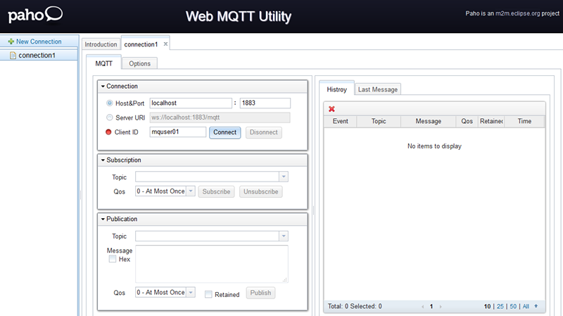
- Click New Connection to create a new connection. The connection metadata is persisted in cookie.
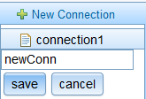
- Right click newConn to rename or delete.
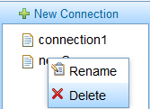
- Use one connection to connect, subscribe, and publish.
- Connect to a server.
- Input client id, host and port or use server URI to connect. If connect successfully, the red icon on the left of Client ID will turn to green.
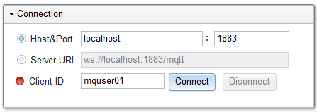
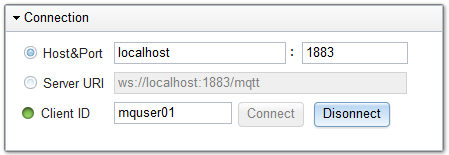
- Click the Options tab to set connect options include basic options, HA,and LWT.
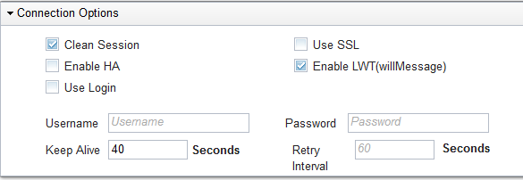
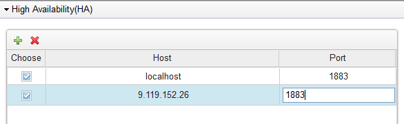
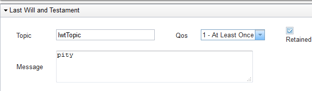
- Subscribe to a topic.
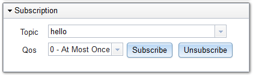
- Publish to a topic.
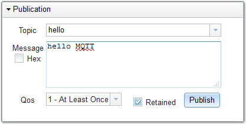
- Receive a message. Click the Last Message tab to view recevied messages.
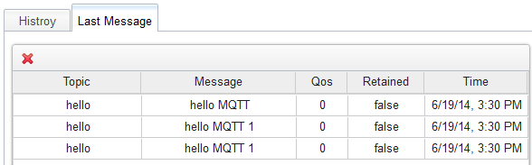
- Click the Histroy tab. It includes actions, event and messages.
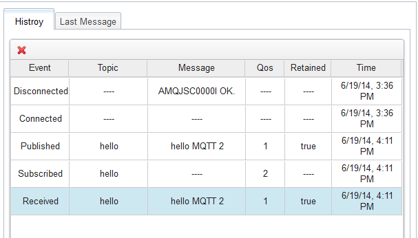
- View message detail. Double click message item in Last Message or Histroy.
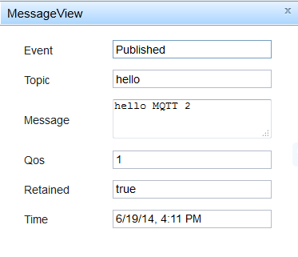
- Disconnect the connection. Click the Disconnect button.
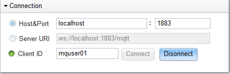
Development suggestion
If you want to develp your own apps using MQTT JS library, you can refer to the file of mqttui/TabConn.js